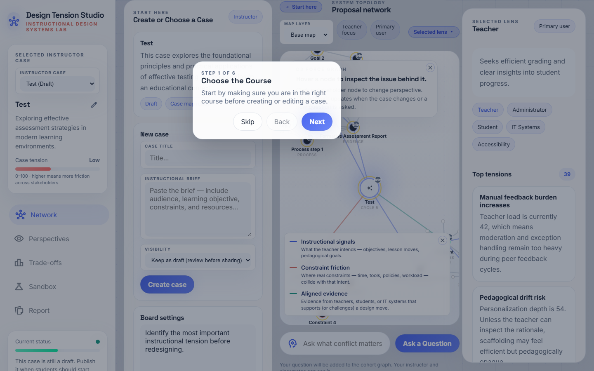
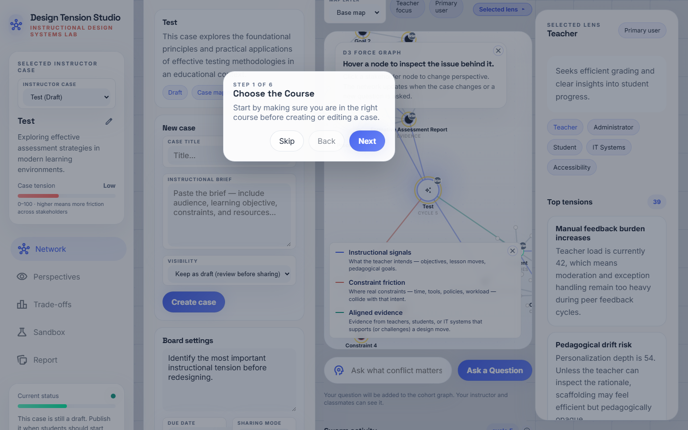
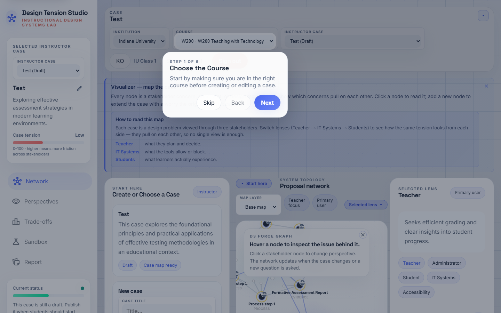
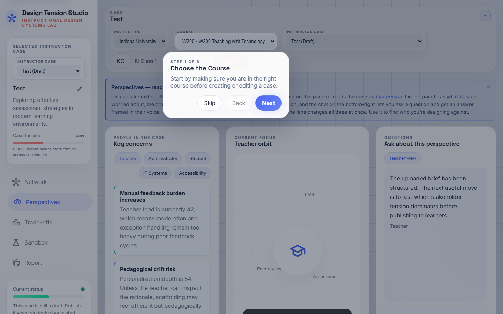

Instructor Session Guide
A step-by-step walkthrough for running a full class session with Swarm ID — from case prep, to live facilitation during class, to post-session review. At each step we call out what to do, what your students will see on their screens, and where instructors most often get stuck.
What makes Swarm ID different
When a student asks a question, Swarm ID doesn't just call an LLM once. Instead, a swarm round fires — five stakeholder agents (Teacher, Student, IT, Administration, Accessibility) answer the same question in parallel, and a second classification pass sorts the answer pairs into agree / disagree / partial, drawing them as edges on the map. Students see plurality and points of conflict at a glance, and when an answer doesn't sit right they can hit Challenge to get a second-round elaboration from that agent.
Your job as instructor is to set the stage so the swarm does meaningful work inside a class activity — a strong brief, a deliberate publishing strategy, an eye for intervention moments during class, and a lens for interpreting student reports afterward. This guide walks those four skills in order.
FSU test accounts (for the preview session)
Instructor: yujinpark@swarm.io / classfsuyp · Students (examples): fsuclass1@swarm.io–fsuclass8@swarm.io / classfsu1–classfsu8 · Class join code: FSU-YJPARK · Section: FSU-A
Get ready — sign in and open the Studio
Before class, confirm that you can get into the tool without issues and that your class and case environment is intact. Five minutes is plenty.
-
Sign in with your instructor account
Sign-in screenGo to https://swarmid.vercel.app and sign in with your instructor account (Supabase auth). If you don't have an account yet, ask your platform administrator — self sign-up is intentionally disabled so class data stays inside the institution.
Use the language toggle in the top right to set EN. All UI copy and AI responses will render in English.
What happens under the hoodAfter Supabase authenticates you, the app loads your institution and class context and restores recent cases and tutorial progress from
localStorage.
Sign-in screen — enter your email and password, then set the language to EN. -
Confirm you've landed in the Studio
Studio · Case Network viewOnce you're signed in, you'll land on the Studio's Case Network view. The left sidebar has navigation (Network · Perspectives · Trade-offs · Sandbox · Report) and a Current state health panel; the center holds the D3 network canvas; the right shows the Selected perspective and AI Collaboration Activity feed.
Next to AI Collaboration Activity in the top right, a pill reads
Cycle N · Round M.Cycleis how many times the graph has re-rendered;Roundis how many actual multi-agent turns have run. After class, aRoundvalue well above zero is your evidence that students actually engaged the swarm.
The Studio view you land on right after sign-in.
Create your case — structure a brief for class
Line up the case you'll use in class. Reuse an existing case, or turn a new brief into a case by letting Gemini structure it. Remember: the quality of the brief is the quality of the swarm.
-
Check your existing case library
Intake panel · case listScroll the Get started (intake) panel and review your class cases. Each card shows a title, summary, draft/published status, and Open/Publish buttons. Cards tagged Published are visible to students; Draft cards are instructor-only.
Most common admin mistakeThe top reason students can't find a case: the card is still in Draft. One click on the card's Publish button fixes it.

Case list in the intake panel — draft/published status visible at a glance. -
Open one case to preview it
Card · Open caseClick Open case on the card you plan to use in class (e.g., Learner Motivation Case 1) and the canvas will re-render: a central Core node (the case title), stakeholder nodes around it (Teacher · Student · IT · Admin · Accessibility), and signal nodes (goals · constraints · evidence) linked to each stakeholder. Every key node carries a source badge in its upper-right corner — a
Briefbadge means that node came from the uploaded brief.Open it once yourself before class. This warms the cache and surfaces any Gemini quota issues ahead of time.
The network laid out after opening a case. -
Upload and structure a new brief
Intake · brief upload areaNeed a fresh case for this session? In the intake panel, paste your brief into the Paste your class brief text area and click Structure case. The system calls Gemini to extract goals, constraints, stakeholders, and seed evidence, turns them into a case record, and adds it to the list as a Draft.
What a good brief includesTarget learners, learning goals (ADDIE/5E-friendly language), constraints (time · tools · policy · workload), and at least one tension point (e.g., "authorship policy vs. AI-assisted drafting"). The more tension the brief encodes, the richer the swarm's disagreement edges.
Briefs to avoidMarketing-style copy like "this class is engaging and boosts student participation." There are no stakeholders or constraints to extract, so the map ends up thin.

Paste your brief and hit the Structure case button.
Class setup — board settings and gates
Set the board rules before students arrive. These values govern the pace of the session (fast exploration vs. deliberate decisions). Five minutes.
-
Adjust board settings
Settings tabOpen Settings at the top to configure the cohort board. Key knobs:
- Max learner nodes — cap on the nodes a single student can place on their personal map.
- Max AI expansions per node — cap on the follow-ups Gemini auto-generates under a student node.
- Governance gate / Accessibility gate — optional review gates students must pass before publishing a decision.
The defaults are safe for a 30-student section. For a 50-minute class, we recommend Max learner nodes ≥ 6; for a shorter, more deliberate session, dial it down.

Settings — learner node cap, AI expansion cap, and gates.
Run the session — live facilitation
While students run their swarms, you have four places to step in: set context with Perspectives → check in with Trade-offs → run "what-if" experiments in the Sandbox → scan the Report outline. 30–50 minutes.
-
Open with a prompt from Perspectives
Left nav · PerspectivesBefore students run their own swarm rounds, switch to the Perspectives view and skim the top conflicts per stakeholder and their tension scores. This is where a strong opening prompt for the whole class takes shape.
Example prompt"If the Teacher score is 74 and the Student score is 58, which stakeholder is carrying more of the load right now, and which constraint put them there?"

Perspectives — top conflicts and tension scores per stakeholder. -
Use Trade-offs for a mid-class checkpoint
Left nav · Trade-offsThe Trade-offs view shows a radar (Personalization / Privacy / Accessibility / Feasibility / Teacher slack) and bar charts. The Matrix status label reads either Needs attention / Watch / Balanced.
Use it as a metacognitive prompt between activity beats: "Where is conflict spiking right now, and which stakeholder's pressure is driving it?"

Trade-offs — radar and the matrix status label. -
Run "what-if" experiments in the Sandbox
Left nav · SandboxIn the Sandbox, apply one of the pre-defined scenarios (50% budget cut · Accessibility mandated · Workload pressure) and watch how the metrics redistribute. Turn on Auto-iterate to let the system shuffle conflicts until the board reaches a stable state.
This is ideal for "what-if" practice. Ask students to write down a prediction before you apply the scenario, reveal the outcome, and then discuss the gap between prediction and result.

Sandbox — metrics redistribute after a scenario is applied.
Reflect — the Report and exports
After class, check the AI Collaboration Activity counters and export the report. This becomes your evidence base for designing the next session. Ten minutes.
-
Review and export the Report
Left nav · ReportThe Report assembles decisions, evidence, and notes into a single shareable summary. Download PNG gives you a network image for slides; Download HTML is a standalone snapshot students can keep.
Signs of strong engagementIn a 30-student section, a
Roundcounter of 30+ means most students actually ran the swarm. If personal student nodes average 2–3 each, the individual layer is working too.Signs you need to interveneIf
Roundis under 5, or you seeAIbadges everywhere but hardly anyMebadges, the next class needs more explicit prompting, paired discussion, or a live demo of a swarm round.
Report — decisions, evidence, and notes assembled into one document.
Pre-flight checklist (5 minutes before class)
- Every case card for this class is "Published." Drafts won't appear for students.
- Board settings are configured. For a 50-minute class, Max learner nodes ≥ 6.
- Open the case once from your own account. Warms the cache and surfaces any Gemini quota issues.
- Set the projector / screen-share window to the Network view. When demonstrating, collapse the side panels with the chevrons so the map fills the canvas.
- Skim the student guide. Knowing the exact screens and wording students see helps you facilitate.
Troubleshooting (common symptoms)
- Students can't see the case. It's still a draft — hit Publish on the card.
- A student asked a question but the network didn't change. Either they didn't submit, or the Gemini key isn't set — check the Vercel
/api/geminilogs. - No disagreement edges anywhere. The second Gemini pass failed silently — look for
classifySwarmEdgeswarnings in the console. - UI is mixing English and Korean. Locale switched mid-render — click the locale button twice to force a full re-render.
- Left sidebar is clipped. Viewport too short — the sidebar scrolls independently, so drag its inner content.